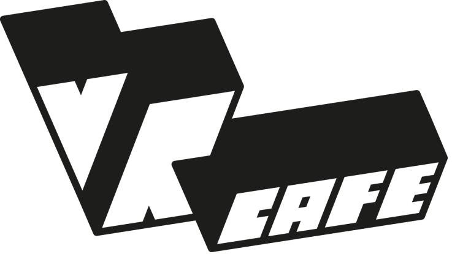

dark mode
Todo app
Heb jij veel taken vandaag? gebruik de todo app van
VR Cafe haarlem
om alles af te krijgen!
Add a new todo item!
categorie
Werk
Persoonlijk
Vrije Tijd
SUBMIT
Mijn todo lijst:
Geef de planten water
persoonlijk
Maak de opdracht voor VR Cafe Haarlem
werk